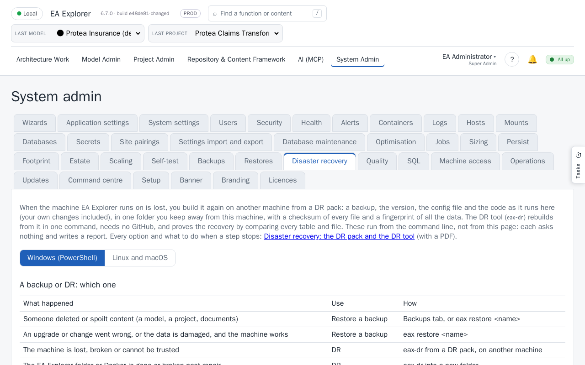

Make a DR pack
For: System Admin
Everything needed to rebuild EA Explorer on another machine, in one folder.

#/admin/disaster-recoveryWhy do this
If the machine is lost, a DR pack lets you rebuild on another: the newest backup, the settings and checksums to prove nothing is damaged. Keeping it off the machine is the point. See Backups, restores and disaster recovery.
Recovery is planned before it is needed: what to protect, how often, how to check it, and how far back each kind of restore reaches. EA Explorer takes a backup of now before any restore, so a restore can itself be undone.
In TOGAF terms: Outside the method: this protects the Architecture Repository itself, the record every ADM phase relies on. See EA Explorer and the TOGAF Standard.
The goal: Everything needed to rebuild EA Explorer elsewhere is in one folder.
Before you start You need to run commands on the machine.
Steps
- On the machine:
eax dr-pack <folder>(a folder off this machine). - It writes the backup, the settings and their checksums.
- Keep the folder safe; it rebuilds the installation.